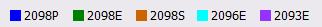
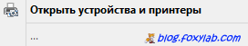

Восстановление флэшки с контроллером фирмы Chipsbank
После странного зависания при записи файла моя флэшка перестала вообще детектироваться Windows как дисковый накопитель, т. е. ей перестала присваиваться буква диска.
Вот как эта флэшка выглядит:
Параметры флэшки как USB-устройства: VID = ABCD, PID = 1234.
Поискав в Google, я нашел нужную информацию — моя флэшка оказалась с контроллером от фирмы Chipsbank (полное название фирмы — Shenzhen Chipsbank Technologies Co. Ltd., адрес — 7/F,Building No.12,Keji Central Road 2,Software Park,High-Tech Industrial Park,Shenzhen,P.R.China, сайт — http://www.chipsbank.com):
Для работы с такими флэшками предназначена сервисная утилита ChipsBank UMPTool (системные требования — ОС Windows XP SP3, 1 GB RAM / Windows 2000, 512 MB RAM) (я использовал версию утилиты V6007 от 14.01.2014).
Вначале при необходимости выбираем английский («English«) язык:
Утилита поддерживает различные типы контроллеров, которые кодируются цветом:

Чипы отличаются возможностями коррекции ошибок (ECC) и размером страниц памяти.
Но и утилита ChipsBank UMPTool не видела мою отказавшуюся опознаваться флэшку.
На помощь пришли два контакта на задней стороне флэшки:
Для того, чтобы флэшку увидела сервисная утилита, необходимо, замкнув контакт (2) на «землю», вставить флэшку в USB-разъем.
Удобно в качестве замыкающего проводника использовать USB-кабель, например, USB — микроUSB:
Необходимо, вставив кабель в другой свободный разъем, корпусом микроUSB разъема коснуться требуемого контакта.
После того, как флэшка отобразится в окне утилиты
замыкающий проводник можно убрать.
зеленый цвет — тип контроллера — Chipsbank CBM2098E
H27UCG8T2B — тип чипа памяти — Hynix H27UCG8T2B —
H — Hynix, 2 — Flash, 7 — NAND flash, U — напряжение питания 2,7 … 3,6 В, CG — плотность 64Гбит, 8 — организация x8, T — классификация NAND — MLC + Single die + Large block, 2 — режим функционирования 1nCE & 1R/nB, Sequential row read disable, B — 3-е поколение
При этом флэшка все равно еще не будет отображаться в Windows как дисковый накопитель:

Для восстановления опознанной утилитой флэшки задаем параметры, предварительно нажав кнопку «Settings (M) »
(пароль («Password«) по умолчанию — пустая строка
):
(щелкните мышкой по рисунку для просмотра в крупном масштабе)
После этого нажимаем кнопку «All Start«. Утилита начинает работу:
Ожидаем окончания работы утилиты и нажимает кнопку «Eject«, размонтируя флэшку. Закрываем утилиту, нажав кнопку «Exit«.
Теперь флэшку можно извлечь из разъема и вставить обратно — она опознается как дисковый накопитель:
Посмотрим на его емкость — она, скорее всего, будет меньше ожидаемой, но зато это гарантирует надежную работы флэшки:
Для проверки надежной работы можно использовать утилиту H2testw (официальный сайт http://www.heise.de/download/h2testw.html). Устанавливаем английский («English«) язык интерфейса, выбираем в списке папку диска — флэшку (в данном примере F:\) и нажимаем кнопку «Write + Verify«:
В процессе работы утилита сначала заполняет («Writing«) информацией всё свободное пространство накопителя
, а затем считывает и сравнивает («Verifying«) считанную и записывавшуюся информацию:
Ожидаем окончания работы утилиты:
Как видим, работа завершена без ошибок — флэшка исправна! Запись опубликована 05.12.2015 в рубрике Windows с метками ChipsBank, H2testw, UMPTool, восстановление флэш-накопителя, восстановление флэшки, ремонт флэш-накопителя, ремонт флэшки, флэш-накопитель, флэшка.
{kind=link}
{kind=link}